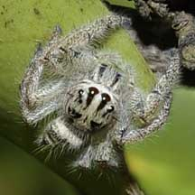
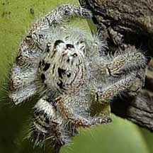
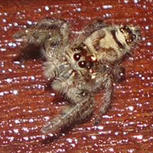

|
|
| arthropods text index | photo index |
| Phylum Arthropoda > Class Arachnida |
| Heavy
jumper spider Hyllus diardi Family Salticidae updated Nov 2019 Where seen? This furry white spider is sometimes seen among mangrove vegetation. It is rather large for jumping spider and is quite active during daylight. Features: Body to about 1cm long. Body furry white with dark markings. Like other jumping spiders (Family Salticidae) it has huge eyes. On the 'face' is a pair of enormous eyes with smaller eyes around the head. These are not compound eyes like that of insects. Nevertheless, these eyes allow the spider to judge distance accurately. What does it eat? Like other jumping spiders, it does not build a web. Instead, it hunts on the move, attaching a silken line to a support before 'bungee jumping' onto suitable prey. Jumping babies: Male jumping spiders perform amusing rituals to entice a female to mate with them. |
 Pulau Ubin, Jul 09 |
 Pulau Ubin, Jul 09 |
| Heavy jumping spiders on Singapore shores |
On wildsingapore
flickr
|
| Other sightings on Singapore shores |
 Pasir Ris Park, Dec 25 Photo shared by Rui Quan Oh on facebook. |
|
Links
References
|